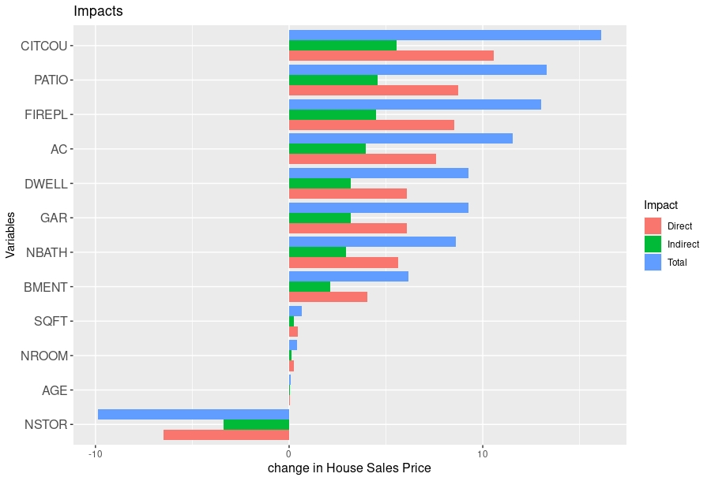
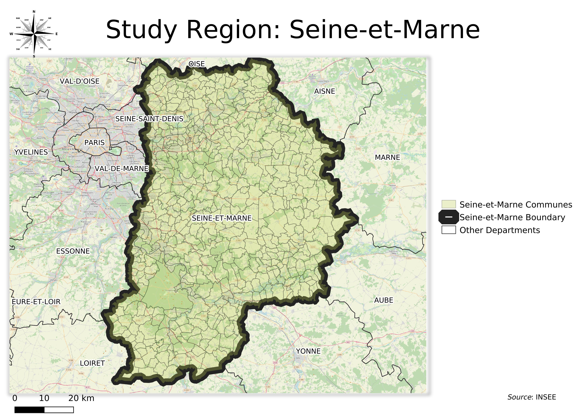
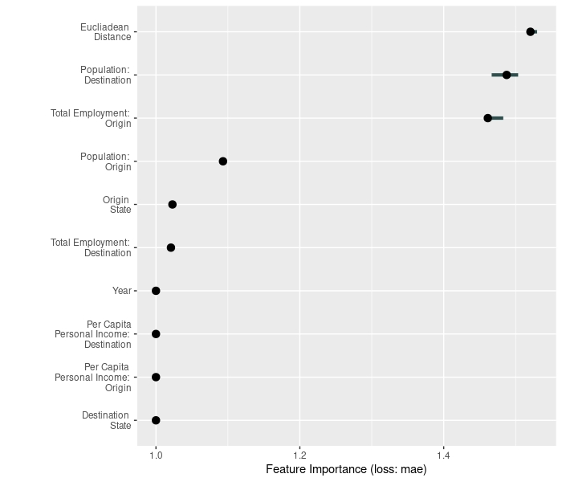
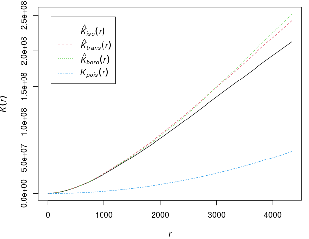

September 7th, 2022
In this study we contribute to the topic of economic growth while taking into account the spatial spillovers. We do this by estimating a spatial panel data model with time varying spatial weights to estimate the further augmented Solow model by Nonneman & Vanhoudt. This study differs from the existing body of literature, since, we estimate the Solow model in a spatial-panel setting and also see the effects of two new additional variables - human capital and technological know-how.
Softwares Used: R
April 15, 2022

Conventional hedonic models do not take into account the spatial autocorrelation, when applied on spatial datai, which can be a problem. Hence, they were extended to take it into account (Anselin (1998)), mainly two models were specified - spatial lag model and spatial error model. However, these models have some problems of their own, i.e., computation of the inverse of a matrix which might not exists always, and requiring a lot of computational resources if the data is quite large.Hence, Lesage and Pace (2003) created Matrix Exponential Spatial Specification which solves these problems. Therefore, to study sales prices of houses in Baltimore we use a MESS specification for a Hedonic Price Model
Softwares Used: GNU Octave, R

Municipal governments borrow money for crucial municipal services, for ex, for supporting building of new infrastructure or economic development. An important role of the a municipal government investment is "to help sustain a high quality of local infrastructure" (Preston, 1981), which is sometimes finianced by borrowing money. However, increasing dependence on municipal debt for development and infrastructure pourposes can become a burden on the municipality, since, it will impose constraints on municipality’s operating budget as the creditors must be paid back. Hence, we should study about the determinants of municipal debts so as to know why certain municipalities have high debt levels and if there is any spatial dependence between municipalities regarding the debt.
Softwares Used: R, QGIS

Spatial Interaction is a dynamic flow process from one place to another. It is general concept for any movement over space. It can be migration, journey from home to work and back, information and commodity flows, etc. To capture these spatial interactions, often times Gravity Models are used. These models theoretically suggest the interaction between two places decreases with the distance between them. In this paper we analyse the internal migration of US using linear, poisson and machine learning approaches.
Softwares Used: R

Understanding Fire Emergencies by the way of spatial point analysis was quite informative. We saw that there was inhomogeneity in the data, i.e. their intensity is more in some regions than others. We also saw that the intensity of the fire emergencies also depends on the amount of workload. Also, there was definite clustering in the data. The data also follows an imhomogenous process, one of which was explored.
Softwares Used: R